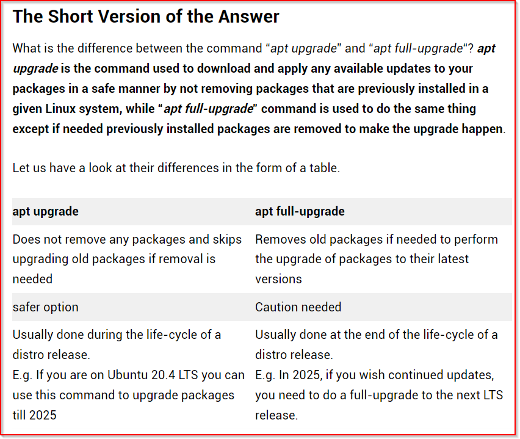

APT (Advanced Package Tool)
apt is an advance packaging tool which is more easier to use than dpkg. It is recommended way to manage packages in Ubuntu and Debian based systems.
In newer versions of Ubuntu, apt-get and apt-cache tools were merge into single apt. apt-get was used to install packages and apt-cache was used to contact to apt repsitory.
Unlike dpkg, apt doesn't understands deb files. Intead of using deb files, apt gets required package files from online repository and calls dpkg by itself after downloading required deb files. Since it is online, apt can easily manage dependecies too.
An APT repository is a webserver that holds packages files with metadata that is readable by apt tool.s
A special kind of repository hosted on servers like Launchpad is known as PPA. PPA stands for Personal Package Archive and is used by non Ubuntu developers to distribute their own personal projects.
apt mantains an index/local database on the system which stores metadata about available packages and upgrade list for already installed packages. apt updates this list from internet repositories. We can manually update this package list by running :
apt update
This updates package list, adds upgrade list for packages and adds new packages that have just being released. It doesn't do anything else than adding package metadata into a list. It is advised to use update before installing new packages or updating the system.
To install packages, use
apt install package[s]We can use -y to install non interactively which is, option to install will not be there like it is in the case above(y/n).
We can directly give apt path to a deb file if available.
If path to deb file is not provided, apt will think that the name you provided is a package name(like in first case where we got an error).
To get list of all upgradable packages use apt list --upgradable.

To upgrade whole system use apt --full-upgrade.
To remove a package use
apt remove package[s]
This will not remove config files so use command below to remove all config files too.
apt purge package[s]
There are also some dependencies left even if we use purge. To remove unused dependencies use
apt autoremove
Ubuntu keeps downloaded deb files in /var/cache/apt/archives
To remove these downloaded files, use
apt clean
list option of apt command will list all packages available in the repository.
There are thousands of repos available.
To search for a package whose desc contains a phrase use
apt search "phrase"
Use --installed flag with apt list to list installed packages.
To get info about a package like download size, dependencies etc. use show option followed by package name.
There are also some graphical package managers like synaptic which can perform all tasks on a gui.
Difference between apt upgrade and apt full-upgrade
